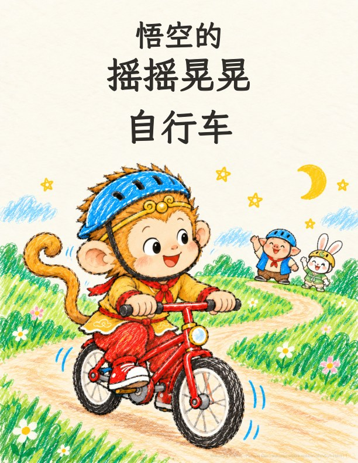
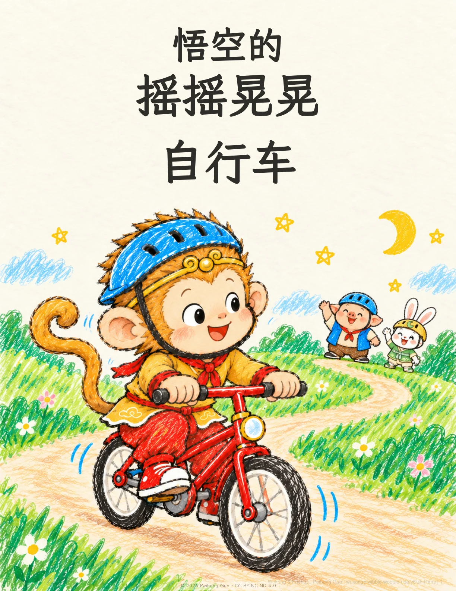

悟空
悟空
一起翻开小冒险。
点击按钮、按左右方向键，或左右滑动来翻页。

这一页暂时加载不出来。请重试，或下载 PDF 阅读。
下载 PDF悟空的 摇摇晃晃 自行车
© 2026 Peihong Guo许可协议： CC BY-NC-ND 4.0
第 1 页，共 18 页
想留着以后读： 下载 PDF
怎样打印成一本小书？
下载「打印小册子」版：US Letter 横向，双面短边翻转（Short Edge），100% 实际大小，每张纸 1 个 PDF 页，按正常顺序打印。每个 PDF 页已经排好两个书页。
打印小册子共 20 页，包含封面、作者页和封底；内封底特意留白。
这本需要 5 张纸；末尾补 0 个空白书页。把纸套叠、对折，再沿中缝装订。
小小心意，让故事继续生长
一起种下下一个故事。
故事可以免费阅读和打印。如果你和孩子喜欢，欢迎支持我继续创作。